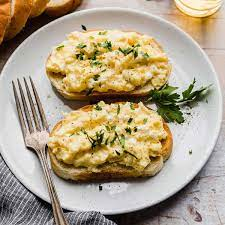

Scrambled Egg Toast

Description
A basic delicious recipe for scrambled egg toast.
Ingredients
- 4 eggs
- olive olive
- butter
- salt
- onion powder
- garlic powder
- truffle powder
- black pepper
- sliced sour dough
- greek yogurt
- minced green onion
Directions
-
In a warm skillet add olive oil and butter and then eggs and stir
constantly for 30 seconds and remove from flame and stir again. After
another 30 seconds have passed return to heat; do this 4 more times
until eggs are scrambled but still moist
-
After eggs are cooked add seasonings to your liking and add a dollop
of greek yogurt
- Toast the sourdogh and spread the scrambled egg onto the toast
-
Lastly, season the toast with a drizzle of olive oil and some salt,
pepper, and green onions